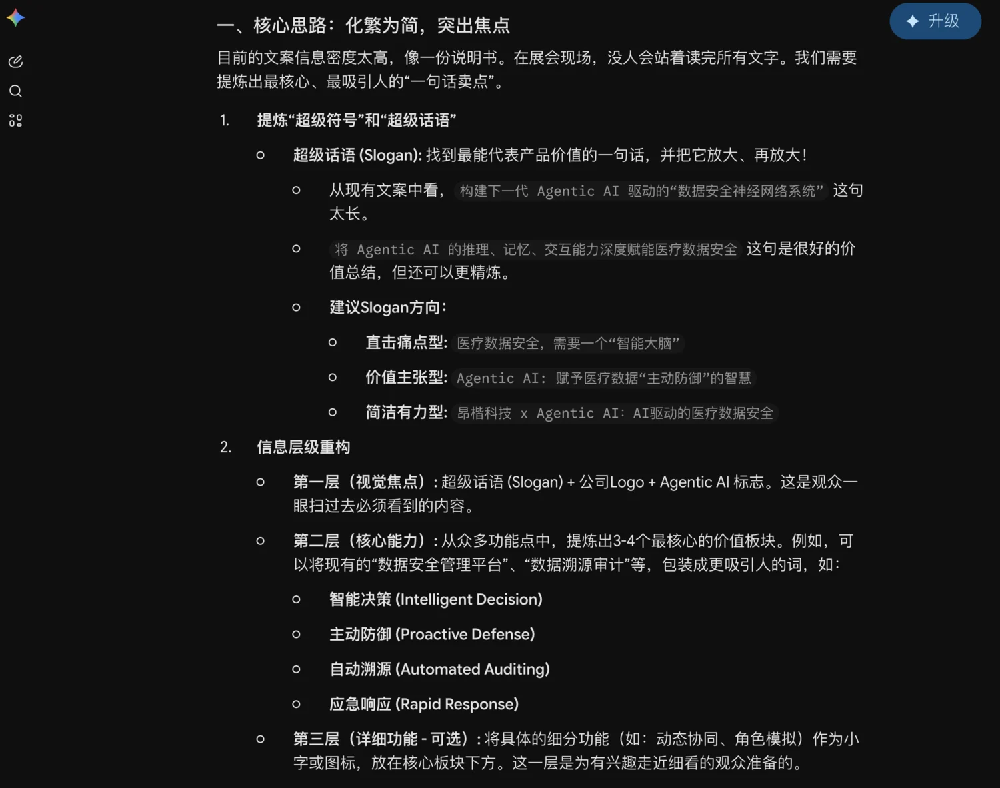
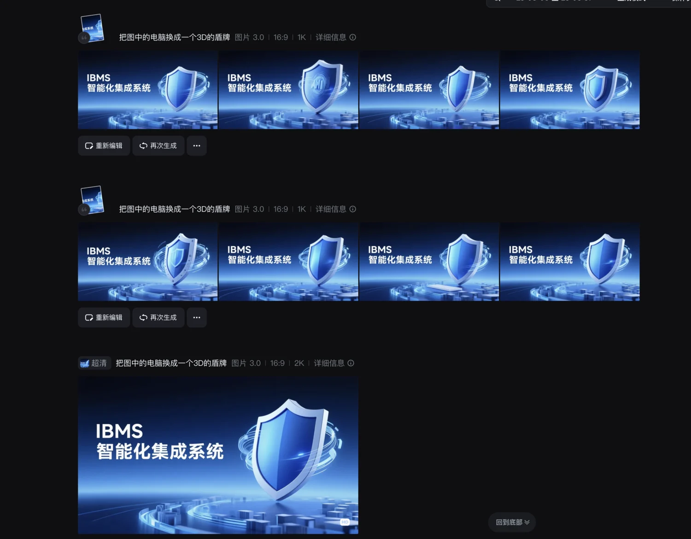
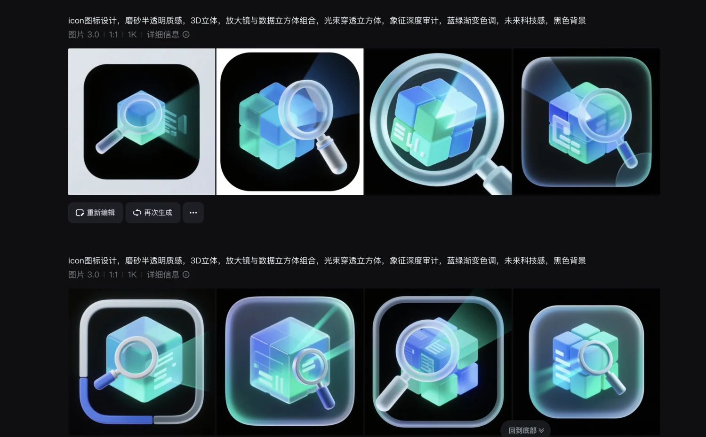
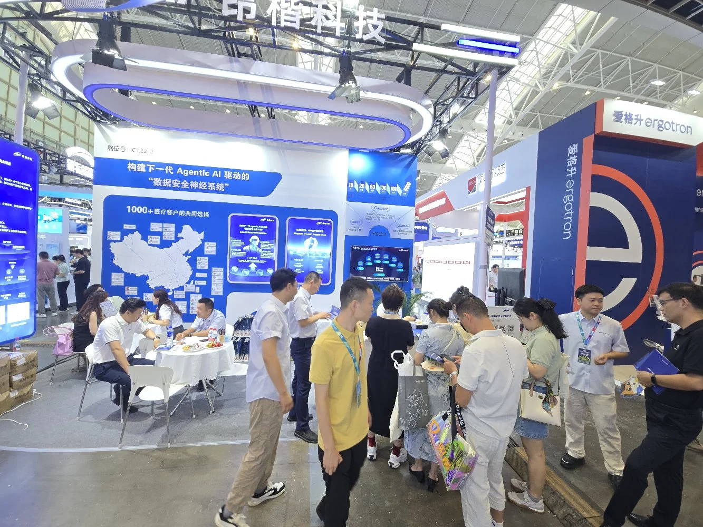
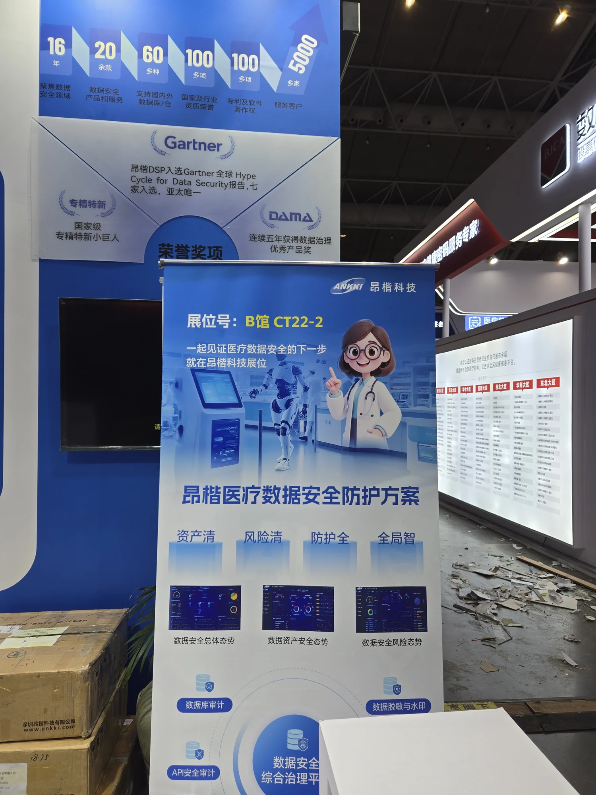
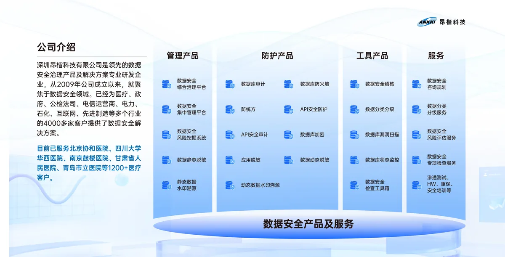
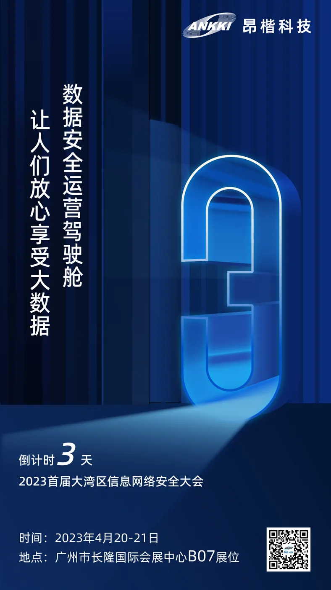
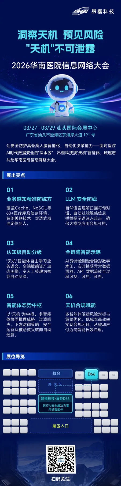

所有筹备信息集中沟通，我作为设计负责人进入项目。
DMHC 2025 · 南京
把技术方案带进国家级医疗行业大会
我负责昂楷科技参加 2025 数字医学与健康大会的整体视觉设计，从前期邀请、技术内容重构、灯箱与易拉宝，到南京现场搭建、拍摄和竞品记录，全程参与项目落地。

01 — 项目全程
设计从大会工作组成立开始，一直跟到南京现场
大会由国家卫生健康委医院管理研究所主办，议题覆盖医疗机构数智化、医疗数据治理与网络安全。公司内部成立专项工作组后，我领取整体设计任务，并与管理层、技术部门、销售和搭建团队持续协作。
梳理邀请、灯箱、易拉宝、画册和二维码物料清单。
完成方案后与总经理确认，再交付制作与搭建。
跟随团队到场，核对物料、记录现场并完成竞品观察。

02 — 信息重构
技术部门交来一页密集方案，我把它改成现场能读懂的内容
原始 PPT 同时容纳产品、能力、机制与服务路径，语言更适合内部讲解。展会观众只会停留很短时间，我需要先判断哪些信息值得留下，再决定视觉结构。



03 — 核心展板
两组客户案例，两组产品能力，分别承担不同的说服任务
案例灯箱需要提供足够细节，供政府与医疗机构的专业观众深入阅读；产品灯箱则突出 2025 年重点研发的 Agentic AI 能力。信息密度是经过业务讨论后的选择，我用层级和阅读顺序控制复杂度。


04 — 传播触点
展位开放之前，邀请已经先一步抵达客户
长图进入官网与微信公众号，短版邀请由销售发送给重点客户；现场再由易拉宝和分区域二维码承接咨询。不同尺寸和渠道保持同一套识别，同时各自只承担最重要的信息。


05 — 现场验证
效果图里的蓝色系统，最终进入真实展会人流
我在南京核对灯箱、易拉宝和二维码物料的最终状态，同时记录观众如何接近展位、在哪些区域停留。这些现场反馈会进入下一次展会的设计判断。


06 — 长期积累
这一套方法，来自多次展会设计的持续积累
标展、特装展、医疗数据安全方案与会前邀请构成了长期工作档案。这里按“展板—邀请—行业场景”组织成一条可探索轨道，展示经验的连续性。



07 — 项目复盘
一次展会结束后，留下的是下一次更快、更准的判断
从工作组开始参与
设计能提前看见内容、制作和现场之间的依赖关系，减少最后阶段的被动修改。
先提出专业判断
面对文字密集的客户案例，我说明视觉风险；业务确认保留后，再用清晰层级完成交付。
现场就是下一轮调研
记录同行展板、观众停留与物料状态，把一次执行继续转化为长期展会经验。
Maridian 负责昂楷科技参加 2025 数字医学与健康大会的整体视觉设计，并从深圳项目筹备一路跟进至南京现场。
他把技术部门提供的密集方案重构为适合展会阅读的内容，再借助 AI 完成信息校验与视觉探索，最终独立判断并完成灯箱、易拉宝、邀请函和二维码物料。
设计既服务专业观众的深读需求，也保持远距离识别与整套展位的一致性。全部核心物料真实制作并进入特装展现场。
现场跟进同时承担验收与调研：记录观众停留、物料状态和同行方案，让一次展会执行沉淀为后续项目的判断依据。
说说你在做的项目，
看看我们合不合适。
bh141425@gmail.com
写邮件→问问 AI 关于 Maridian